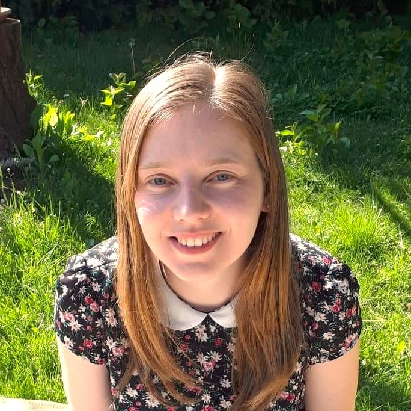

Kukla Tímea

Summary
I am a reliable person who takes work seriously. I enjoy web developing and I also like to work with people.
Education
- App Brewery: Web Development Bootcamp (2023)
- Eötvös Lóránd University: Social Worker BA (2012 - 2016)
Work Experience
- Capital Homeless Shelter
2016-2023
Social worker
- Child Protection Service
2016 June - 2016 October
Social worker
- Europ Assistance
2015-2016
Administrative associate
- Balabit IT
2014
Receptionist
Skills
- Microsoft Office Suite: ***
- Problem solving skills: ****
- Organizational skills: ****
- Communication skills: ***
- Driver's license
Languages
Other